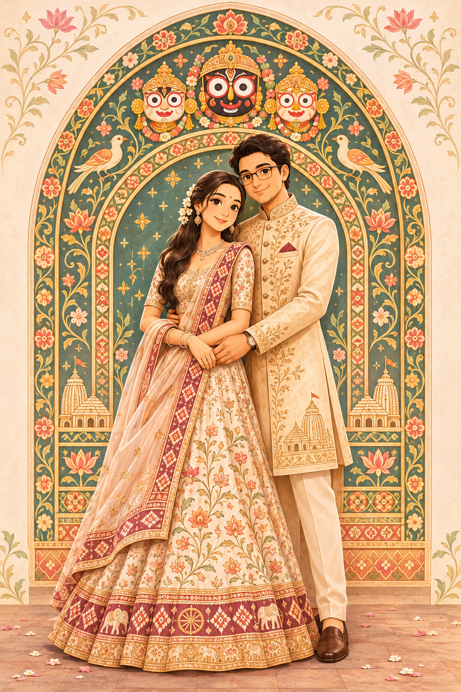
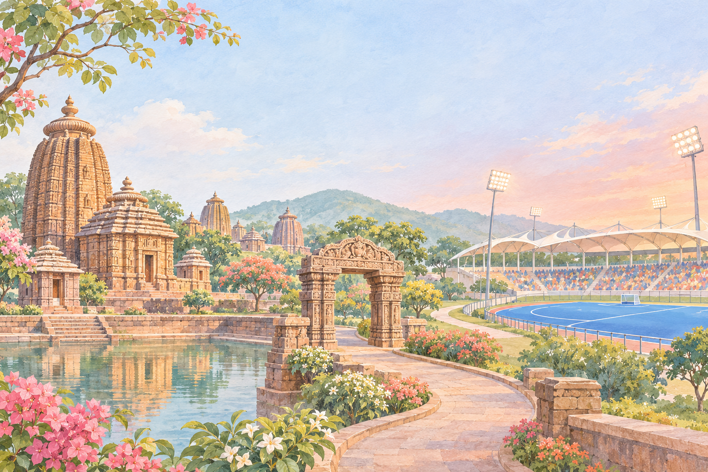
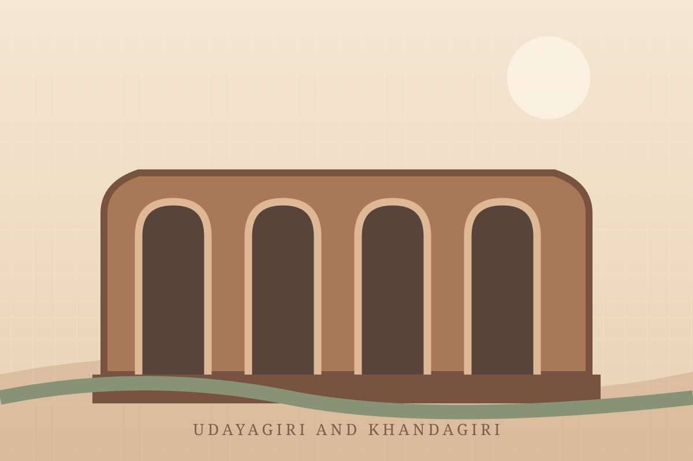
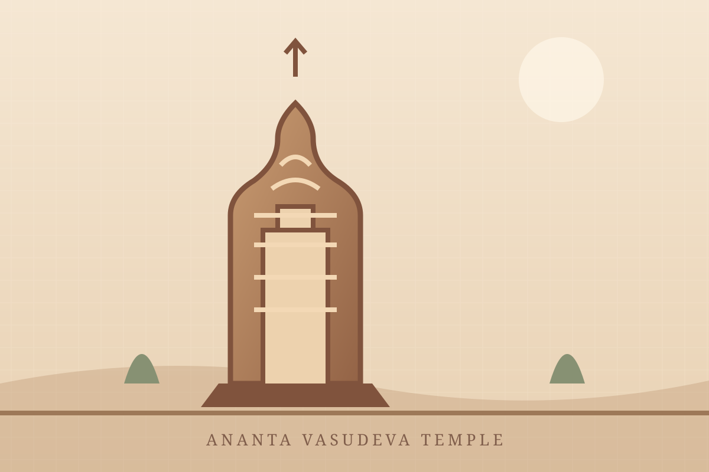
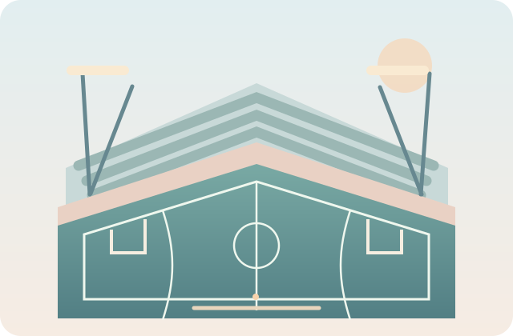

The beginning
Though we were both born and raised in Bhubaneswar, our paths had never crossed. Somehow, two strangers found their way into each other's lives, and a few conversations soon became something special.
With the blessings of Lord Jagannath
 ॥ Om Shri Ganeshaya Namaha ॥
॥ Om Shri Ganeshaya Namaha ॥
A CITY OF STORIES · A STORY OF US
With joy in our hearts,
From temple lanes to our own forever.
Sunday · 7:30 PM onwards
The Regal Palm · Bhubaneswar, Odisha

THE NEXT CHAPTER BEGINS
Our forever begins soon.
TWO BHUBANESWAR CHILDHOODS · ONE BENGALURU CUP OF CHAI
ଶୁଭ ବିବାହ · Subha Vivaha
Though we were both born and raised in Bhubaneswar, our paths had never crossed. Somehow, two strangers found their way into each other's lives, and a few conversations soon became something special.
Our first meeting in Bengaluru was meant to be over coffee. The café was full, so coffee turned into chai. The best things do not always go as planned.
With our families beside us and their blessings guiding us, we are ready to begin the most beautiful chapter of our lives—together.
OUR CITY, IN TWO RHYTHMS
In this city, temple bells and stadium lights share the same horizon. Its ancient stone, living traditions and new energy are part of the story we call home.

ANCIENT STONE · LIVING FAITH
Carved gateways, quiet caves, sacred water and centuries of devotion—each place holds a different memory of Bhubaneswar.

The spiritual heart of Ekamra Kshetra, among temple lanes and the still waters of Bindu Sagar.
Find the old town ↗
A graceful torana and fine Kalinga-era stonework.
See the gateway ↗
Carved spires, intricate detail and a quiet garden setting.
Explore the grounds ↗
Ancient Jain caves, inscriptions and pathways through the hills.
Walk through history ↗
A hilltop landmark recalling Ashoka and the long turn toward peace.
Visit Dhauli ↗
A historic temple and a beloved part of the old-city rhythm.
Discover the temple ↗BLUE TURF · BRIGHT IDEAS
Sport, craft and culture keep Bhubaneswar looking forward—without losing touch with where it began.

THE CITY'S BIG HEARTBEAT
From the roar around the blue turf to international hockey tournaments, Kalinga Stadium brings the city together in a different kind of celebration.
Explore Odisha's sports venues ↗
MADE BY HAND · MADE TO LAST
A living showcase of Odisha's craft traditions, makers and materials.
Find Kala Bhoomi ↗
A BREATH OF GREEN
A much-loved wildlife and botanical escape on the city's edge—another side of Bhubaneswar's living landscape.
Keep exploring: Odisha Tourism's Bhubaneswar guide ↗
TWO FAMILIES · ONE NEW CHAPTER
Together with their families, we warmly invite you to celebrate the wedding of
THE GROOM
Son of
Mrs. Kaushalya BeheraTHE BRIDE
Daughter of
Mrs. Sipra SundarrayTHREE GATHERINGS · A LIFETIME OF MEMORIES
We look forward to celebrating with you in Bhubaneswar.
SATURDAY · 6:00 PM ONWARDS
Let the hues of mehendi narrate the story of love and celebration!
At our residence
K-4/10, Kalinga Vihar, Bhubaneswar – 751019
SUNDAY · 8:00 AM
A splash of turmeric, laughter, and the glow of happily ever after.
At the bride's residence
Plot No. 3259/5623, Kotithirtha Lane, Gouri Nagar, Old Town, Bhubaneswar – 751002
SUNDAY · 7:30 PM ONWARDS
With hearts full of love, let's gather to celebrate the beginning of forever.
The Regal Palm
Cuttack–Puri Bypass Road, Bhubaneswar – 751006
COME FIND US
Make your way to the City of Temples. We can't wait to welcome you.
BY AIR
The city's airport, with road connections to Old Town and the wedding venue.
Airport map ↗BY RAIL
The principal railway station for travel into the city.
Station map ↗BY ROAD
Babasaheb Bhimrao Ambedkar Bus Terminal connects Bhubaneswar with destinations across Odisha.
Bus terminal map ↗Allow extra time for city traffic and check your route on the day. Event directions are linked with each celebration.
WE WOULD LOVE TO SEE YOU
Sunday, 13 December 2026
The Regal Palm · Bhubaneswar